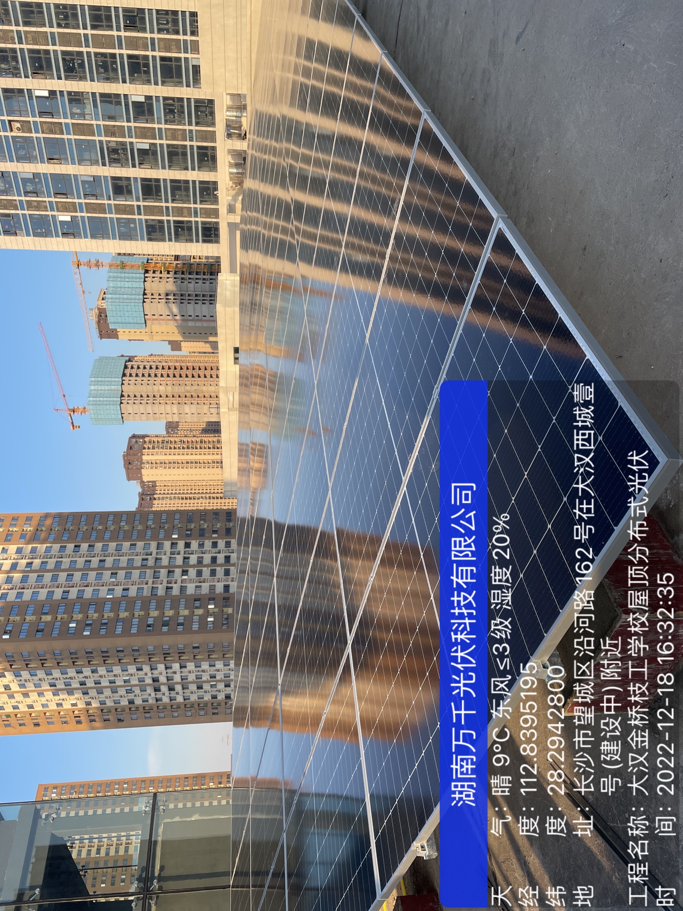

|
2月13日，国家能源局在京召开例行新闻发布会，发布2022年可再生能源发展情况，并介绍完善可再生能源绿色电力证书制度有关工作进展、全国新型储能装机规模情况以及全国电力市场交易规模有关情况，并回答记者提问。图为新闻发布会现场。 发布会文字实录 国家能源局新闻发言人梁昌新 各位记者朋友，大家下午好！欢迎大家出席国家能源局例行新闻发布会。今天的新闻发布会将例行发布2022年可再生能源发展情况，并介绍完善可再生能源绿色电力证书制度有关工作进展、全国新型储能装机规模情况以及全国电力市场交易规模有关情况，还将回答各位记者的提问。 出席今天发布会的有能源节约和科技装备司副司长刘亚芳女士、新能源和可再生能源司副司长王大鹏先生、市场监管司副司长赵学顺先生，我是综合司司长、新闻发言人梁昌新。各位司长发布内容之后，统一安排回答记者提问。 现在，请王大鹏副司长介绍2022年可再生能源发展情况以及完善可再生能源绿色电力证书制度有关工作进展。 新能源和可再生能源司副司长王大鹏 谢谢主持人。下面我先发布2022年可再生能源的发展情况。2022年是党的二十大胜利召开之年，党的二十大报告中提出，积极稳妥推进碳达峰碳中和，为我国能源发展指明了前进方向，提供了根本遵循。全国能源行业深入学习贯彻党的二十大精神，贯彻落实党中央、国务院决策部署，积极推动可再生能源实现新突破、迈上新台阶、进入新阶段。 一年来，国家能源局锚定碳达峰碳中和目标，加强顶层设计，做好政策供给，统筹能源安全供应和绿色低碳发展，可再生能源呈现发展速度快、运行质量好、利用水平高、产业竞争力强的良好态势，取得了诸多里程碑式的新成绩。 一、全国风电、光伏发电新增装机突破1.2亿千瓦，创历史新高，带动可再生能源装机突破12亿千瓦。2022年，全国风电、光伏发电新增装机突破1.2亿千瓦，达到1.25亿千瓦，连续三年突破1亿千瓦，再创历史新高。全年可再生能源新增装机1.52亿千瓦，占全国新增发电装机的76.2%，已成为我国电力新增装机的主体。其中风电新增3763万千瓦、太阳能发电新增8741万千瓦、生物质发电新增334万千瓦、常规水电新增1507万千瓦、抽水蓄能新增880万千瓦。截至2022年底，可再生能源装机突破12亿千瓦，达到12.13亿千瓦，占全国发电总装机的47.3%，较2021年提高2.5个百分点。其中，风电3.65亿千瓦、太阳能发电3.93亿千瓦、生物质发电0.41亿千瓦、常规水电3.68亿千瓦、抽水蓄能0.45亿千瓦。 二、风电光伏年发电量首次突破1万亿千瓦时。2022年我国风电、光伏发电量突破1万亿千瓦时，达到1.19万亿千瓦时，较2021年增加2073亿千瓦时，同比增长21%，占全社会用电量的13.8%，同比提高2个百分点，接近全国城乡居民生活用电量。2022年，可再生能源发电量达到2.7万亿千瓦时，占全社会用电量的31.6%，较2021年提高1.7个百分点，可再生能源在保障能源供应方面发挥的作用越来越明显。 三、可再生能源重大工程取得重大进展。一是以沙漠、戈壁、荒漠地区为重点的大型风电光伏基地建设进展顺利。第一批9705万千瓦基地项目已全面开工、部分已建成投产，第二批基地部分项目陆续开工，第三批基地已形成项目清单。二是水电建设积极推进。白鹤滩水电站16台机组全部建成投产，长江干流上的6座巨型梯级水电站，乌东德、白鹤滩、溪洛渡、向家坝、三峡、葛洲坝形成世界最大“清洁能源走廊”。三是抽水蓄能建设明显加快。2022年，全国新核准抽水蓄能项目48个，装机6890万千瓦，已超过“十三五”时期全部核准规模，全年新投产880万千瓦，创历史新高。 四、可再生能源竞争力不断增强。一是可再生能源发展市场化程度高，各类市场主体多、竞争充分，创新活力强。二是技术进步推动成本大幅下降，陆上6兆瓦级、海上10兆瓦级风机已成为主流，量产单晶硅电池的平均转换效率已达到23.1%。三是光伏治沙、“农业+光伏”、可再生能源制氢等新模式新业态不断涌现，分布式发展成为风电光伏发展主要方式，2022年分布式光伏新增装机5111万千瓦，占当年光伏新增装机58%以上。 五、我国可再生能源继续保持全球领先地位。全球新能源产业重心进一步向中国转移，我国生产的光伏组件、风力发电机、齿轮箱等关键零部件占全球市场份额70%。同时，我国可再生能源发展为全球减排作出积极贡献，2022年我国可再生能源发电量相当于减少国内二氧化碳排放约22.6亿吨，出口的风电光伏产品为其他国家减排二氧化碳约5.73亿吨，合计减排28.3亿吨，约占全球同期可再生能源折算碳减排量的41%。我国已成为全球应对气候变化的积极参与者和重要贡献者。 接下来，我再介绍一下完善可再生能源绿色电力证书制度的有关工作进展。 习近平总书记在党的二十大报告中明确提出，倡导绿色消费，推动形成绿色低碳生产方式和生活方式。贯彻落实党中央国务院决策部署，国家能源局积极推进绿色电力证书交易，引导绿色电力消费。2022年，全年核发绿证2060万个，对应电量206亿千瓦时，较2021年增长135%；交易数量达到969万个，对应电量96.9亿千瓦时，较2021年增长15.8倍。截至2022年底，全国累计核发绿证约5954万个，累计交易数量1031万个，有力推动经济社会绿色低碳转型和高质量发展。 2023年是全面贯彻落实党的二十大精神的开局之年，我们将坚持以习近平新时代中国特色社会主义思想为指导，全面深入学习贯彻党的二十大精神，积极适应能耗“双控”向碳排放总量和强度“双控”转变的新要求，推动完善可再生能源绿色电力证书制度，提升绿色电力消费水平。一是完善《关于促进可再生能源电力消费的通知》，明确绿证的权威性、唯一性、通用性和主导性，扩大绿证核发和交易范围，拓展绿证交易平台，推动绿证核发全覆盖，做好与碳市场的衔接。二是制订交易规则，进一步明确绿证核发机构、交易平台、交易主体等绿证市场主要成员的权利义务，系统设计绿证账户管理体系，规定绿证核发、交易的具体操作方式。三是同步完善基于绿证的可再生能源电力消纳保障机制，引导可再生能源发电在全国范围内合理消纳利用，提高绿色电力消费水平，推动绿证机制得到落实。目前，相关政策制度正在加紧完善，并将适时向全社会公开征求意见。介绍完毕。 梁昌新 谢谢王大鹏副司长。下面请刘亚芳副司长介绍全国新型储能装机规模情况。 能源节约和科技装备司副司长刘亚芳 大家好！谢谢主持人。国家能源局认真贯彻落实“四个革命、一个合作”能源安全新战略，锚定双碳目标，大力加强新型储能行业宏观引导，促进产业规模快速发展，带动技术创新多元化，为支撑构建新型电力系统提供了宝贵经验。 一、初步建立新型储能行业管理体系 近一年多来，我局会同国家发展改革委出台《关于加快推动新型储能发展的指导意见》《“十四五”新型储能发展实施方案》《新型储能项目管理规范（暂行）》《关于进一步推动新型储能参与电力市场和调度运用的通知》等一系列政策，开发建设全国新型储能大数据平台，初步建立了全国新型储能行业管理体系，统筹推动全国新型储能试点示范，为新型储能技术创新应用和产业高质量发展奠定了基础。目前，全国所有省（区、市）及新疆生产建设兵团均已不同程度开展新型储能发展政策研究。 二、新型储能装机规模增长提速 根据各省级能源主管部门上报的数据，截至2022年底，全国已投运新型储能项目装机规模达870万千瓦，平均储能时长约2.1小时，比2021年底增长110%以上。 分省域来看。截至2022年底，累计装机规模排名前5的省份分别为：山东155万千瓦、宁夏90万千瓦、广东71万千瓦、湖南63万千瓦、内蒙古59万千瓦。2022年新增装机规模排名前5名的省份分别为：宁夏89万千瓦，山东89万千瓦，湖北53万千瓦，湖南50万千瓦，内蒙古33万千瓦。 三、以锂离子电池为主，新型储能技术多元化发展态势明显 截至2022年底，全国新型储能装机中，锂离子电池储能占比94.5%、压缩空气储能2.0%、液流电池储能1.6%、铅酸（炭）电池储能1.7%、其他技术路线0.2%。 从2022年新增装机技术占比来看，锂离子电池储能技术占比达94.2%，仍处于绝对主导地位，新增压缩空气储能、液流电池储能技术占比分别达3.4%、2.3%，占比增速明显加快。此外，飞轮、重力、钠离子等多种储能技术也已进入工程化示范阶段。 梁昌新 谢谢刘亚芳副司长。请赵学顺副司长介绍全国电力市场交易规模有关情况。 市场监管司副司长赵学顺 谢谢大家。我介绍一下全国电力市场交易规模的有关情况。国家能源局深入学习宣传贯彻党的二十大精神，加快推动全国统一电力市场体系建设，2022年电力市场交易规模和主体数量均创历史新高。 按交易结算口径统计，2022年全国市场交易电量共5.25万亿千瓦时，同比增长39%，占全社会用电量比重达60.8%，同比提高15.4个百分点。其中，跨省跨区市场化交易电量首次超1万亿千瓦时，同比增长近50%，市场对促进电力资源更大范围优化配置的作用不断增强。在电力交易机构注册的市场主体数量首次超过60万家，同比增长29%，进一步激发了市场活力，为电力市场发展奠定良好基础。全国燃煤发电机组市场平均交易价格达0.449元/千瓦时，较全国平均基准电价上浮约18.3%，有力缓解了煤电企业亏损局面。 从电网经营范围看，2022年国家电网经营区域市场交易电量达4.16万亿千瓦时，同比增长42.7%。南方电网经营区域市场交易电量0.85万亿千瓦时，同比增长27.4%；内蒙古电网经营区域市场交易电量0.24万亿千瓦时，同比增长24.9%。 此外，为贯彻落实区域协调发展重大战略，国家能源局于去年下半年先后启动川渝一体化辅助服务市场和南方区域电力市场试运行，充分发挥市场机制对保障能源安全稳定供应的重要作用。 其中，川渝一体化调峰市场共计促进消纳四川省低谷富裕水电电量451.5万千瓦时，跨区支援最大调峰电力20万千瓦，川渝两地调峰资源优化配置利用水平得到有效提升；重庆市火电获得补偿费用104.54万元，四川水电获得发电费用75.15万元，电网企业增加输电费收益33.37万元，川渝资源禀赋有效互补，为成渝双城经济圈一体化发展注入新的动力。南方区域电力市场对跨省跨区电力直接交易进行了有效探索，首次组织海南发电企业与广东售电公司“点对点”中长期交易0.2亿千瓦时；区域调频市场全年连续平稳运行，市场规模总费用约11.1亿元，累计带动火储联合调频项目投运29个，有效保障了系统频率处于优质水平；区域现货市场于2022年7月23日启动不结算试运行，并于12月份开展了连续2天调电运行，实现了区域电力现货交易与电力生产运行有序衔接。介绍完毕，谢谢！ 梁昌新 谢谢赵学顺副司长。现在开始提问，请各位记者朋友围绕今天新闻发布会的内容提出问题，提问时请先报一下自己所代表的新闻机构。 经济日报记者 我有一个问题，2023年是全面贯彻落实党的二十大精神的开局之年，我想问一下，国家能源局如何在确保能源安全供应的前提下，推动可再生能源大规模高质量跃升发展？ 王大鹏 谢谢记者朋友的提问。下面我介绍一下2023年为推动可再生能源大规模高质量跃升发展国家能源局拟推动的重点工作。2023年，国家能源局将坚持以习近平新时代中国特色社会主义思想为指导，全面贯彻落实党的二十大精神，统筹能源安全保障和绿色低碳转型，在确保能源安全供应的前提下，加快规划建设新型能源体系，持续推动可再生能源大规模高质量跃升发展。 一是围绕落实规划，进一步明确发展预期，组织可再生能源试点示范，进一步推动风电光伏技术创新和发展模式创新；适时开展“十四五”规划中期评估。 二是围绕可再生能源发展的新形势新要求，推动可再生能源法修订；进一步完善可再生能源绿色电力证书制度，建立基于绿证的可再生能源电力消纳保障机制。 三是锚定碳达峰碳中和目标，推动实施可再生能源替代行动。围绕能源清洁低碳高效利用，加快在工业、交通和住建等领域可再生能源替代。 四是围绕构建新型能源体系，大力推动可再生能源重大工程。第一批大型风电光伏基地项目并网投产，第二批、第三批基地项目陆续开工，海上风电基地建设稳妥有序推进。同时，要推动分散式陆上风电和分布式光伏发电项目建设。组织开展抽水蓄能布局优化，推动抽水蓄能又好又快发展。 五是围绕县域能源生产、消费、技术、体制革命，因地制宜，分类施策，指导地方全面启动农村能源革命试点县建设，增加乡村清洁能源供应，探索建立农村新型能源体系，助力全面推进乡村振兴。我就介绍这些。谢谢。 新华社记者 近年来，国家能源局积极推进绿色电力证书交易，引导绿色电力消费，请问绿色电力证书对我国可再生能源发展的重要意义和作用是什么？谢谢。 王大鹏 谢谢您的提问。绿色电力证书是可再生能源发电企业所发绿色电力的“电子身份证”，1个绿证对应1000度可再生能源电量，每一张绿证的产生或交易，就意味着有1000度可再生能源绿色电力已经上网或者消费。因此，绿证是可再生能源电量绿色属性的证明，也是认定可再生能源生产、消费的唯一凭证。发电企业通过出售绿证获取绿色电力的环境价值收益，电力用户通过购买并持有绿证证明其消费绿色电力。2022年8月，发展改革委、统计局、能源局联合印发《关于进一步做好新增可再生能源消费不纳入能源消费总量控制有关工作的通知》，明确将绿证作为可再生能源电力消费量认定的基本凭证。 党的二十大报告明确提出，倡导绿色消费，推动形成绿色低碳生产方式和生活方式。绿证的核发和交易对推动可再生能源高质量发展，提升绿色电力消费水平具有重要意义。一是有利于促进可再生能源开发建设。通过出售绿证，发电企业可以获得独立于可再生能源电能量价值的额外绿色环境收益，有利于调动市场主体投资建设可再生能源的积极性。二是有利于促进可再生能源消纳利用。可再生能源进入高质量发展新阶段，装机规模不断提升，拓展绿证核发和交易范围，从用户侧推动绿色电力的生产和消费，促进可再生能源高水平消纳利用。三是有利于引领绿色消费。目前，一些有环保意识的跨国企业已作出100%使用绿色电力的承诺，部分国家也对进出口贸易商品的绿色电力消费情况提出了明确要求，以购买绿证的方式，证明绿色电力消费，也是国际通行的体现环保贡献的重要途径。 目前，我们正在结合新形势新要求，进一步完善绿色电力证书制度，明确绿证的权威性、唯一性、通用性和主导性，拓展绿证核发范围，推广绿证绿电交易，引导绿色电力消费，为促进可再生能源开发利用，推动全社会更好消费绿色电力发挥更大的作用。谢谢。 中国能源传媒集团记者 我的问题关注民生，我们知道近年来充电基础设施建设对提高人民生活品质具有重要意义。请介绍一下国家能源局在推动充电基础设施建设方面取得了哪些成效。 梁昌新 这个问题由我来回答。充电基础设施是促进新能源汽车产业健康发展的重要保障，也是服务和改善民生的重要领域，对促进我国能源、交通领域清洁低碳转型具有重要意义，为全面贯彻落实《国务院办公厅关于印发新能源汽车产业发展规划（2021―2035年）的通知》，国家能源局会同有关部门相继出台了《关于进一步提升电动汽车充电基础设施服务保障能力的实施意见》《加快推进公路沿线充电基础设施建设行动方案》等一系列政策措施，针对居住社区、公路沿线、内部停车场等充电设施建设场景，明确具体政策措施和建设运营要求，提升了充电基础设施服务保障能力。 近年来，我国充电基础设施快速发展，已建成世界上数量最多、分布最广的充电基础设施网络。 一是充电基础设施规模迅速扩大。2022年，我国充电基础设施继续高速增长，有效支撑了新能源汽车的快速发展。充电基础设施年增长数量达到260万台左右，累计数量达到520万台左右，同比增长近100%。其中，公共充电基础设施增长约65万台，累计数量达到180万台左右；私人充电基础设施增长超过190万台，累计数量超过340万台。 二是充换电运营市场取得较快发展。我国充电市场呈现出多元化发展态势，目前各类充电桩运营企业已超过3000余家，其中公共桩保有量超过1万台的企业有17家，头部企业聚集效应明显。电动汽车充电量持续保持较快增长，2022年全年充电量超过400亿千瓦时，同比增长达到85%以上。 三是技术与标准体系逐步成熟。国家能源局组建能源行业电动汽车充电设施标准化技术委员会，建立了具有中国自主知识产权的充电基础设施标准体系，累计发布国家标准31项、行业标准26项，中国直流充电标准与欧、美、日并列世界四大充电标准方案。 四是政府监测服务平台体系加快建设。全国已建设省级充电设施监测服务（监管）平台29个（除西藏、青海），为各地开展行业管理、补贴发放、规划制定提供支撑，国家能源局正在有序推进国家级平台的规划建设。 充电基础设施发展取得显著成效，但仍存在公共充电设施布局不合理、部分居民小区建桩难充电难、充电市场运行不规范、设施维护不到位等问题。下一步，国家能源局将会同有关部门继续加强充电基础设施产业发展的顶层设计和政策协同，持续优化充电网络规划布局，着力破解关系人民群众切身利益的充电难题，优化完善政府监管平台体系，提升充电行业发展质量和建设运营标准，服务新能源汽车产业发展，满足人民清洁低碳出行的需求。谢谢。 中央广播电视总台记者 近年来，全国新型储能装机规模持续快速增长，请问背后的原因是什么？ 刘亚芳 谢谢你的提问。根据我们的分析，全国新型储能装机规模持续快速增长，主要有以下五个方面原因。 一是碳达峰碳中和目标的提出，为储能快速发展创造了良好机遇。为推动实现碳达峰碳中和目标，加快建设高比例可再生能源的新型电力系统成为我国能源事业发展的重要任务。风电、光伏发电存在间歇性、随机性、波动性，现有电力系统要接受和消纳大规模高比例波动性强的风电、光伏发电，亟需大力发展各类储能以弥补电力系统灵活性调节能力缺口。 二是支撑技术产业发展的顶层设计不断完善，为新型储能快速发展奠定了政策基础。近年来，国家出台了《关于加快推动新型储能发展的指导意见》《新型储能项目管理规范（暂行）》《“十四五”新型储能发展实施方案》《关于进一步推动新型储能参与电力市场和调度运用的通知》《电力辅助服务管理办法》《关于加强储能标准化工作的实施方案》等一系列政策文件，始终坚持市场主导、政策驱动，强调统筹规划、多元发展，鼓励创新示范、先行先试。随着政策体系逐步完善和市场环境不断优化，多种示范引领带动效果凸显，新型储能发展进入了快车道。 三是新型储能特性与传统的储能技术形成优势互补，使新型电力系统构建有更多的选择。较之于传统的抽水蓄能，新型储能选址灵活、建设周期短、响应快速灵活、应用场景多元，与抽水蓄能可以形成优势互补，在不同的场景中解决新能源接入电力系统时带来的强随机性、高波动性等问题。 四是技术突破和经济性提高，为新型储能快速发展进一步创造了有利条件。近年来，国家新型储能技术发展速度不断提升，能量密度、功率密度和循环寿命大幅提升，安全防控技术和措施不断完善。储能用锂离子电池能量密度较十年前提高了一倍以上，功率密度提升约50%，目前已形成较完备的产业链；液流电池、钠离子电池、压缩空气储能、飞轮储能等技术发展迅速。尽管上游原材料价格快速增长，以锂离子电池为主流的储能电池系统成本仍呈下降趋势。新型储能行业整体处于研发示范向商业化初期的过渡阶段，并逐步形成产业化体系。 五是地方政府和各类市场主体发展建设新型储能积极性高涨，为新型储能快速发展注入了活力。各地加大新型储能发展研究力度，制定专项规划或者在相关能源规划中明确新型储能发展目标，通过开展省级试点示范、制定补贴政策等方式大力推动新型储能发展。能源企业、社会资本等各种投资主体对于新型储能的投资热情高涨，加快了新型储能项目建设和落地进度。谢谢。 人民网记者 随着我国新能源大规模快速发展，电力系统的灵活调节能力和煤电转型发展越来越重要，辅助服务市场建设备受关注。请问国家能源局在电力辅助服务市场建设方面有哪些工作考虑？ 赵学顺 谢谢你的提问，新能源大规模发展是电力系统低碳转型的基本路径，煤电转型发展是电力系统消纳新能源的重要支撑。其中，起到关键作用的就是电力辅助服务市场机制。 去年年底，我国电力辅助服务实现了6大区域、33个省区电网的全覆盖，统一的辅助服务规则体系基本形成。2022年，通过辅助服务市场化机制，全国共挖掘全系统调节能力超过9000万千瓦，年均促进清洁能源增发电量超过1000亿千瓦时；煤电企业因为辅助服务获得补偿收益约320亿元，有效激发了煤电企业灵活性改造的积极性，推动了煤电由常规主力电源向基础保障性和系统调节性电源并重转型。 关于下一步工作考虑，国家能源局将按照“以需求为导向、以转型为目标、以市场为抓手”的原则，重点开展以下三个方面工作。 一是进一步加大电力辅助服务市场建设力度。会同相关部门制定辅助服务价格办法，建立市场化的价格形成机制。修订完善有关市场交易细则，推动调频、备用等辅助服务品种市场化，以市场竞争方式降低系统整体调节成本。同时，结合深化燃煤发电上网电价市场化改革等有关要求，指导各地科学界定辅助服务需求的原则和具体标准，引导用户侧合理分摊辅助服务费用，共同承担系统调节成本，更好保障能源电力安全供应和清洁低碳转型。 二是进一步拓展辅助服务覆盖广度。加快引导电储能、工商业负荷、电动汽车充电网络、虚拟电厂等新业态参与系统的调节，发挥现有试点的示范效应，推动电力系统由“源随荷动”向“源网荷储互动”升级。建立健全跨省跨区辅助服务市场机制，充分优化各区域省间错峰互济空间和资源共享能力，有效促进区域能源协调发展。 三是进一步挖掘辅助服务功能深度。根据新型电力系统的运行特点，指导各地因地制宜地研究设立转动惯量、爬坡、调相等辅助服务新品种，切实提升电力系统可靠性和电能质量，更好地保障电力安全供应。鼓励供水、供气、供热等公共服务行业的用户负荷参与，形成多能协同优化的整体格局，不断提高我国能源的整体利用效率。 中国改革报记者 刚才赵司长介绍了去年全国电力市场交易规模情况，在各方面均创历史新高。我们知道去年年初，国家发展改革委、国家能源局印发了《加快建设全国统一电力市场体系的指导意见》，党的二十大报告提出要构建全国统一大市场。请问国家能源局下一步计划从哪些方面开展工作，进一步推动电力市场体系建设？ 赵学顺 谢谢您的提问。党的二十大报告提出，构建全国统一大市场，深化要素市场化改革，建设高标准市场体系。这对下一步指导我们加快推进全国统一电力市场体系建设具有指导性意义。为此，国家能源局今年1月印发了《2023年能源监管工作要点》，这里面明确了7个方面的重点工作，而排在第一位的就是要“强化电力市场体系建设”。这里面包括三个方面的任务：一是加快推进全国统一电力市场体系建设，二是进一步发挥电力市场机制作用，三是深化电力市场秩序监管。 这里我想重点介绍有关加快推进全国统一电力市场体系建设的相关工作考虑。一是要落实党的二十大关于构建全国统一大市场和深入推进能源革命的决策部署，研究全国统一电力市场发展规划。二是要强化电力市场基础制度规则的统一，规范电力市场方案规则制定的程序。三是要加强区域电力市场设置方案研究。明确区域电力市场组织架构，研究建立区域电力市场建设方案工作规范指引及跟踪推进机制。四是要深化完善南方区域电力市场机制，加快推进长三角、京津冀等区域电力市场建设，充分发挥电力市场在促进资源优化互济及应急状态下余缺调节的平衡作用。回答完毕，谢谢！ 梁昌新 由于时间关系，今天的新闻发布会到此结束，本场发布会由新华网、我局门户网站同步现场图文直播，我局微信公众号转发，请大家关注。谢谢各位！再见。
|
